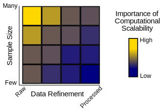
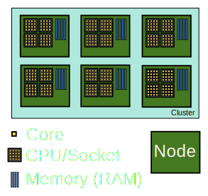
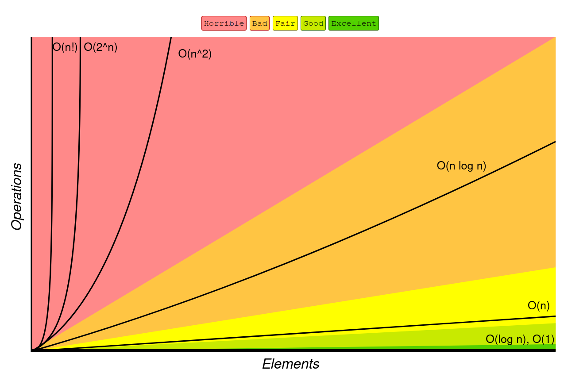

# {{ page.title }}
---
Remember this?
databio.org/seqcosts
---
Lower costs → More data
databio.org/seqcosts
---
### Scalable computing in genomics
Genomics can be 'big data'.

Scalability considers time and space
---
### Approaches for scalability
1. Parallelization
2. Optimization
3. Databases
4. Compression
---
## 1. Parallelization
> Splitting a compute task, and then completing each split simultaneously.
---
### split-apply-combine
- Many problems call for a similar computing architecture
- *e.g.* MapReduce/Hadoop
---
Scopes of parallelism
by process
by sample
by dependence
---
### Parallel by process
PROs:
- easy to use if the tool can do it (*e.g.* `-c 16`)
- relatively easy in R or Python
CON:
- node-threaded parallelism (restricted to a single node)
- typically built-in to a tool, so limited by tool capacity
---
### Aside: Cluster hardware

---
### Parallel by sample/job
PRO:
- no shared memory; limited only by cluster size
- HPC clusters are intended for this type of parallelization
- Restricted by size of HPC, rather than node (burst to cloud)
- Doesn't depend on the tool
CON:
- requires independence of jobs
---
### Parallel by dependency
PRO:
- not necessarily node-threaded
CON:
- may have shared file-system requirements
- requires a dependency graph of workflow steps
- requires a layer of task management above typical HPC usage
- limited to independent workflow elements
- requires independence of jobs
---
Scopes of parallelism: tradeoffs
by process
by sample
by dependence
---
### Parallel processing in R
- [parallel]() package (part of Core R)
```R
mclapply(data, function, mc.cores=detectCores())
```
---
### Parallel jobs in R
- BatchJobs
- snow
---
### Parallel processing in Python
- subprocess module
- multiprocessing module
- threading module
---
### Workflows
> A workflow or pipeline is a repeatable sequence of tasks that process a piece of data.
flowchart LR
Data --> Task1 --> Task2 --> Task3 --> Output
---
### Workflow spectrum

---
#### Workflow/pipeline engine/framework
> A development toolkit that makes it easier to build workflows.
- Snakemake
- Nextflow
- Common Workflow Language
---
### Snakemake
---
### Nextflow
---
### Common workflow language
---
### Stop writing shell scripts!
- Shell scripting language is difficult to write
- As a corollary, shell scripts are also generally difficult to read
- Shell scripting lacks the features in a full-service language
---
> The shell makes common and simple actions really simple, at the expense of making more complex things much more complex.
---
> Typically, a small shell script will be shorter and simpler than the corresponding python program, but the python program will tend to gracefully accept modifications, whereas the shell script will tend to get less and less maintainable as code is added.
---
> This has the consequence that for optimal day-to-day productivity you need shell-scripting, but you should use it mostly for throwaway scripts, and use python everywhere else. -Anonymous
---
## 2. Optimization
1. Algorithm complexity
2. Language choice and quirks
3. Time/memory tradeoff
---
### Optimization: algorithm complexity

Source: https://www.bigocheatsheet.com/
---
How big of data can you handle?
```R
data.frame(C=1, logN=log(n), N=n, NLogN=n*log(n), NSq=n^2, TwotoN=2^n, NFactorial=factorial(n))
C logN N NLogN NSq TwotoN NFactorial
2 1 0.6931472 2 1.386294 4 4 2
3 1 1.0986123 3 3.295837 9 8 6
4 1 1.3862944 4 5.545177 16 16 24
5 1 1.6094379 5 8.047190 25 32 120
6 1 1.7917595 6 10.750557 36 64 720
7 1 1.9459101 7 13.621371 49 128 5040
8 1 2.0794415 8 16.635532 64 256 40320
9 1 2.1972246 9 19.775021 81 512 362880
10 1 2.3025851 10 23.025851 100 1024 3628800
11 1 2.3978953 11 26.376848 121 2048 39916800
12 1 2.4849066 12 29.818880 144 4096 479001600
13 1 2.5649494 13 33.344342 169 8192 6227020800
14 1 2.6390573 14 36.946803 196 16384 87178291200
15 1 2.7080502 15 40.620753 225 32768 1307674368000
16 1 2.7725887 16 44.361420 256 65536 20922789888000
17 1 2.8332133 17 48.164627 289 131072 355687428096000
18 1 2.8903718 18 52.026692 324 262144 6402373705728000
19 1 2.9444390 19 55.944341 361 524288 121645100408832000
20 1 2.9957323 20 59.914645 400 1048576 2432902008176640000
```
---
## Factorial time $ O(n!)$
Factorial time arises in problems involving permutations
Traveling salesman: find the minimum distance path connecting all points.

Source: [Travelling salesman problem](https://en.wikipedia.org/wiki/Travelling_salesman_problem)
---
## Factorial time $ O(n!)$
Shortest common superstring: Given set of strings S find shortest string containing the strings in S as substrings
Brute force: enumerate all orders

---
## Which is worse?
- $ O(c^n) $ - Exponential time
- $ O(n^c) $ - Polynomial time
---
## Exponential time $ O(2^n) $
Exponential time arises in problems with nested subproblems
---
## Polynomial time $ O(n^2) $
```python
# Naively align reads to a reference genome
for (r in reads): # Order 10^8 ?
for (p in reference_positions): # Order 10^9
score_alignment(r, p)
```
```python
# Scan for motif matches
for (m in motifs): # Order 10^3
for (s in sequences): # Order 10^7
motif_scan(m, s)
```
---
Find the overlaps

- Sequential search: $ O(n) $ - Linear time
- Binary search $ O(log(n)) $ - Logarithmic time
---
## Constant time $ O(1) $
Array lookup
```
regions[15]
```
Indexes
```
regions[ index(chr1, 1526) ]
```
---
Tabix indexing
Input:
```
chr1 10468 annotation1
chr1 10469 annotation2
chr1 10470 annotation3
```
Compress: `bgzip file.tsv`
Index: `tabix -s 1 -b 2 -e 2 file.tsv.gz`
Retrieve: `tabix file.tsv.gz.tbi chr5:50000-100000`
See [Tabix Bioinformatics paper](https://doi.org/10.1093/bioinformatics/btq671)
---
BigBed and BigWig
- Compressed and Indexed versions of BED and WIG files.
- Compressed: makes the files much smaller.
- Indexed: Random access allows reading specific chunks
---
### Optimization: Language choice
1. Existing implementations are often faster than yours
2. Compiled languages are faster than scripting languages
3. Loops in R are slow
---
### Use vectorized loops in R
```R
library("microbenchmark")
d = matrix(rnorm(10000000), 10, 1000000)
myMeans = function(d) {
means = c()
for (i in 1:1000000) { means[i] = mean(d[,i]) }
means
}
microbenchmark(
myMeans(d),
apply(d, 2, mean),
colMeans(d),
times=3)
Unit: milliseconds
expr min lq mean median uq max neval
myMeans(d) 4693 4880 4997 5067 5149 5230 3
apply(d, 2, mean) 4856 5047 5152 5237 5300 5363 3
colMeans(d) 7 7 7 7 7 8 3
```
---
### Link C code into R or Python
- [Rcpp](http://adv-r.had.co.nz/Rcpp.html) makes it easy to link C++ into R.
- [Cython](https://cython.org/) compiles Python code into C extensions
- [Extending Python](https://docs.python.org/3/extending/extending.html) shows how to call C extensions from Python
---
### Optimization: Speed/memory tradeoff
- Disk I/O is a often bottleneck.
- Prevent reads/writes by loading into memory.
- Memory lookups are quick
---
### Extract ATAC in consensus peaks
Method 1 pseudocode:
```python
def quantify_accessibility(peaks_bed, reads_bam):
with(f as open(peaks_bed)):
count_reads(f.readline(), readsbam)
```
Method 2 pseudocode:
```python
def quantify_accessibility(peaks_bed, reads_bam):
peaks = load_file(peaks_bed)
for (r in peaks):
count_reads(r, readsbam)
```
Which is faster? Which uses more memory?
Could we switch the peaks and reads?
---
# Compression
Does smaller = faster ?
- Zipping files leads to faster transfer
- But zipping files must be unzipped to be read
- Disk space vs compute time is also a tradeoff
---
### CRAM
"Reference-based" compression ([Fritz 2011](https://dx.doi.org/10.1101%2Fgr.114819.110))